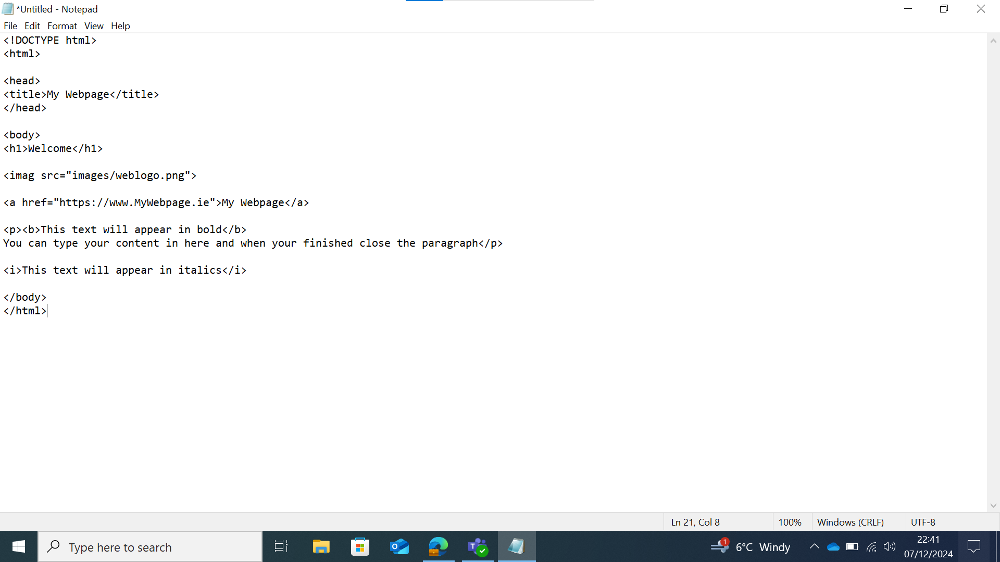
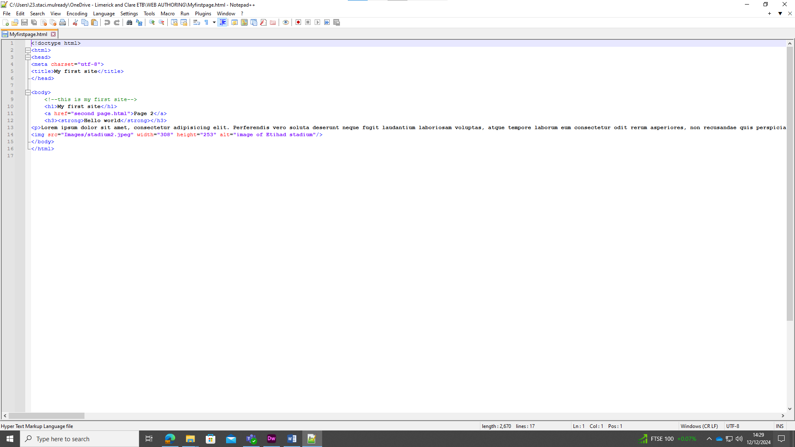
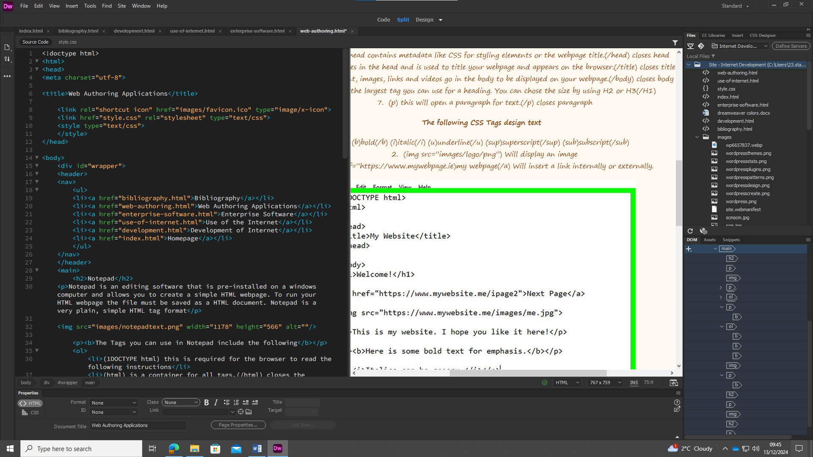
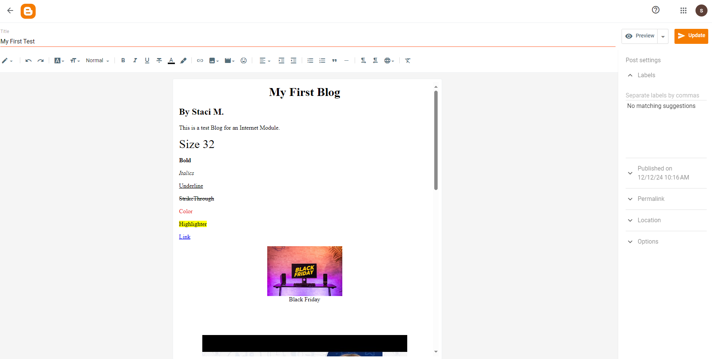
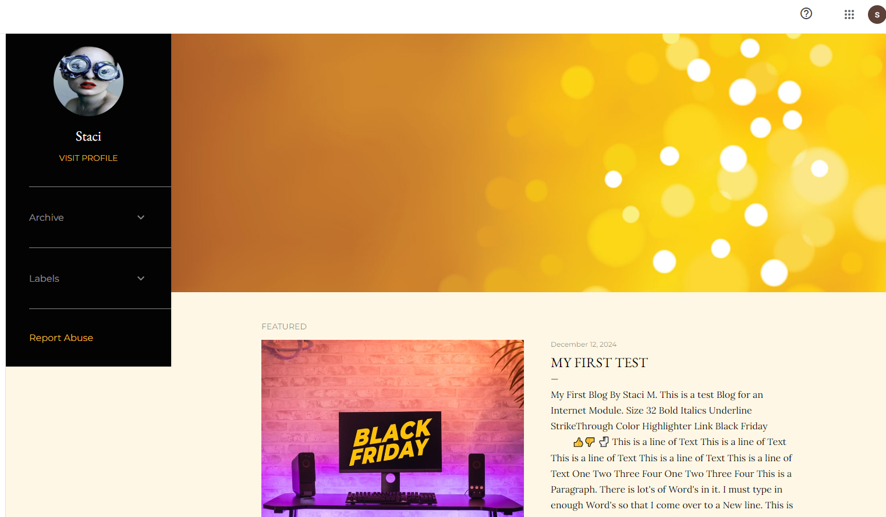

Notepad
Notepad is an editing software that is pre-installed on a windows computer and allows you to create a simple HTML webpage. To run your HTML webpage the file must be saved as a HTML document. Notepad is a very plain, simple HTML tag format
The Tags you can use in Notepad include the following
- (1DOCTYPE html) this is required for the browser to read the following instructions
- (html) is a container for all tags.(/html) closes the container
- (head) the head contains metadata like CSS for styling elements or the webpage title.(/head) closes head
- (title) this goes in the head and is used to title your webpage and appears on the browser.(/title) closes title
- (body)content, images, links and videos go in the body to be displayed on your webpage.(/body) closes body
- (H1) is the largest tag you can use for a heading. You can chose the size by using H2 or H3(/H1)
- (p) this will open a paragraph for text.(/p) closes paragraph
The following CSS Tags design text
- (b)bold(/b) (i)italic(/i) (u)underline(/u) (sup)superscript(/sup) (sub)subscript(/sub)
- (img src=”images/logo/png”) Will display an image
- ( a href=”https://www.mywebpage.ie)my webpage(/a) Will insert a link internally or externally.
To view this document, save it as HTML and open with Internet Explorer.
Notepad++
Notepad++ is a more advanced software with loads more elements and features than the original Notepad. You can do loads more using Notepad++ and it’s still easy to use. You will benefit more from this software to design your webpage. It’s simple to download and set up to start your HTML. Once opened just simply set your language to HTML in the language tab. This will ensure that HTML tags will appear and work. Notepad++ is easier having the lines numbered down the left. Tags appear in colour. This version of Notepad++ allows more tags than the previous version.
Dreamweaver
Dreamweaver is a software that is specifically designed to create HTML, CSS and JavaScript. It is a paid software with annual plans and also offers a free trial to try it out for yourself before buying.
Dreamweaver is a far more structured software compared to Notepad and Notepad++. It offers loads more features with the same easy to follow instructions. With Dreamweaver you split your screen view allowing you to see both your HTML tags and a preview of the webpage. You can edit your page from both windows.
Another great feature allows you to separate your CSS style from your Index page on the same tab. Keeping tags for content together and tags for styling together.
Tags are coloured and automatically close themselves. Dreamweaver will display red tags where there is an error found making it easier to find and control.
Page properties make it simple to link internal links with an easy drag arrow. The built in programme contains boxes to open where you can make quick changes to all H1, H2, H3’s sizes, font and colour. Making it easier to copy across more than one page.
It displays images that you have added to tags when you move the mouse to hover over it. It also displays predicted tags when typing in codes to help you choose. It is a fun professional webpage software for designing and creating a website.
Blogger
Blogger is a website that let's you create your own personalised Blog to post. it displays similarly to a Word Document with fewer functions in the ribbon. it is easy and simple to use and edit. you can insert image and videos with a simple insert icon all you need is a the image you want to share in your images folder or from online and for videos the link. you can select a theme and edit the styling to your preference. Once posted you simply log back into Blogger to view the stats on View's and Comments.
The above image is the editing stage on Blogger. Below is a preview of the Blog with a Theme added.
